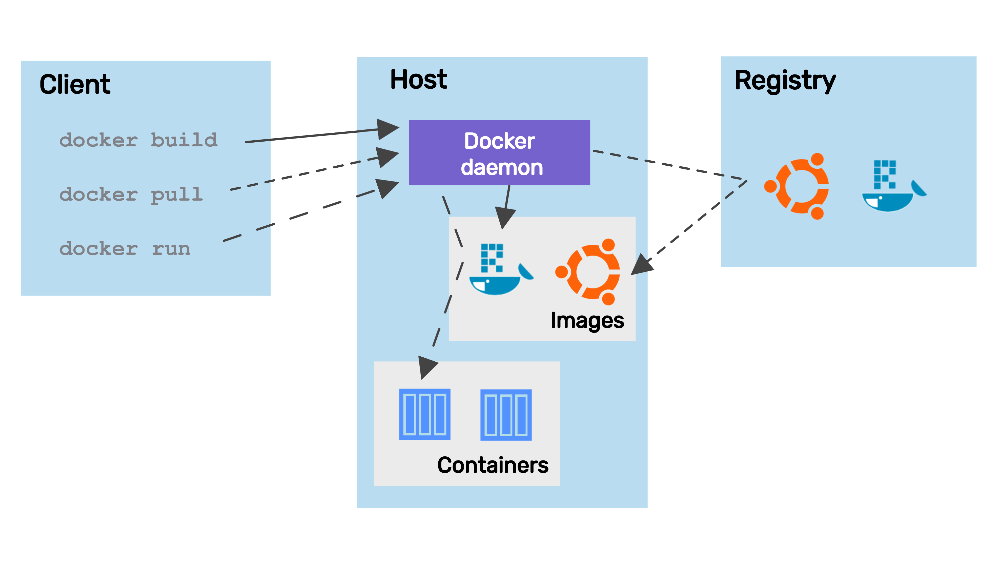

Docker Basics
What is Docker
According to the Docker docs:
Docker is an open platform for developing, shipping, and running applications. Docker enables you to separate your applications from your infrastructure so you can deliver software quickly. With Docker, you can manage your infrastructure in the same ways you manage your applications.
The rest of this page also relies heavily on the Docker Docs.
Install Docker
To download and install Docker for your platform of choice, visit the Docker download page.
Docker concepts
Docker Engine
The Docker Engine is a client-server application that includes a server
(a long-running daemon process that listens to API requests, dockerd), a REST API (specifies the interface that programs can use to talk to the daemon), and a
command line interface (CLI) (the client side, docker).
The CLI uses the REST API to control or interact with the Docker daemon. The daemon creates and manages Docker objects, such as images, containers, etc.

Docker registries
A Docker registry stores Docker images. Docker Hub is a public registry and Docker is configured to look for images on Docker Hub by default. There are many other registries, or users can have their own private registry.
Docker images
An image is a read-only template with instructions for creating a Docker container. An image can be based on another image with additional customization on top of this so called base image.
Docker containers
A container is a runnable instance of an image. Users can create, start, stop a container using the Docker API or CLI. It is also possible to connect a container to networks or attach storage to it.
By default, a container is isolated from other containers and the host machine. The degree of isolation can be controlled by the user, and depends on it is connected to networks, storage, other containers, or the host machine.
Dockerfile
Docker builds images by reading the instructions from a Dockerfile.
A Dockerfile is a text document that contains all the commands to assemble an image
Using the docker build CLI command. We will learn more about the
Dockerfile as part of the worked Shiny example.
CLI commands
The most common Docker CLI commands are:
docker login: log into a Docker registrydocker build: build a Docker image based on aDockerfiledocler push: push a locally build image to a Docker registrydocker pull: pull an image from a registrydocker run: run a command in a new container based on an image
We will learn more about these commands as part of the worked Shiny example.